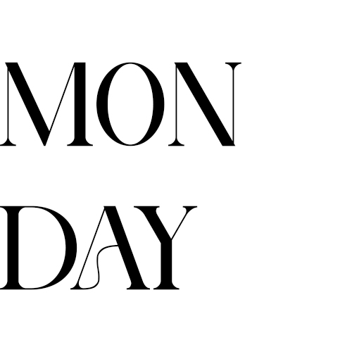
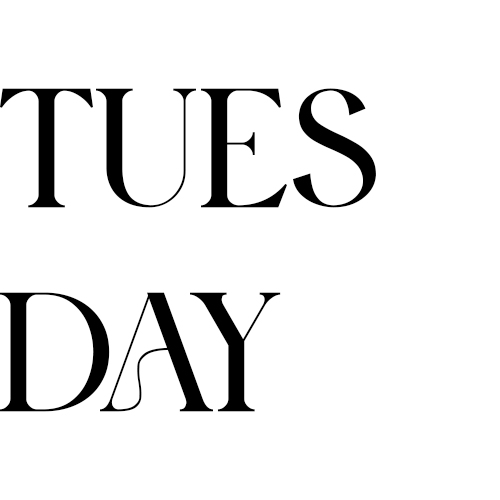
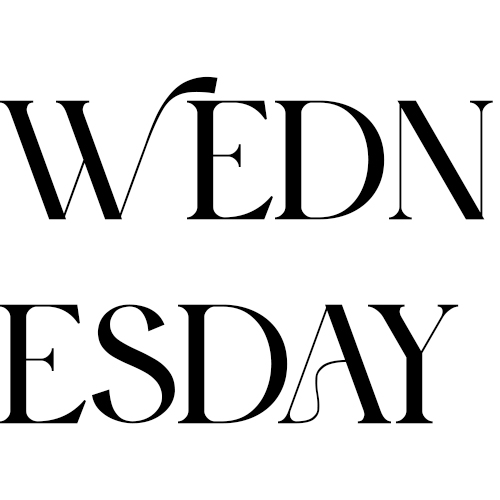
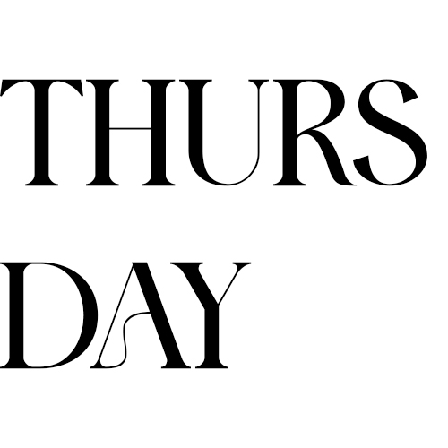
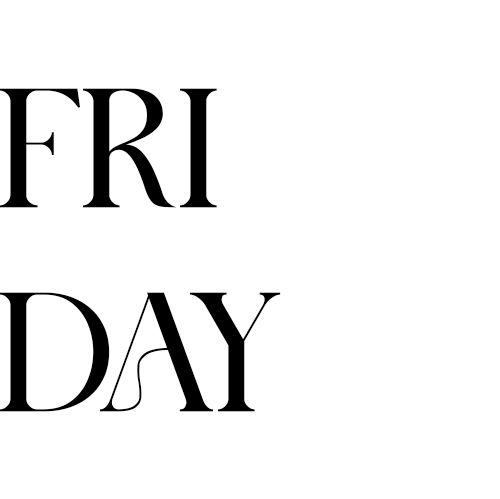

Week 1
28th April 2025
What did I do today?
I organised all the files and folders for my storage account, downloaded the briefs, read through them carefully, and set up and linked my GitHub, Netlify, and site repositories.
Were there any blockers?
None today.
29th April 2025
What did I do yesterday?
I set up my storage account files and folders, reviewed the briefs carefully, and connected my GitHub, Netlify, and repositories.
What will I do today?
I will complete my first formative for the term and begin brainstorming problems related to the brief.
Are there any blockers?
None today.
30th April 2025
What did I do yesterday?
I worked on my first formative task, which was to build a demo cupcake site. I really enjoyed this because I got to use photos from my baking passion project during COVID, and it was exciting to imagine what the concept could have been if brought to life.
What will I do today?
I will plan out the term, start forming my problem statement, and begin conducting desk research to support it.
Are there any blockers?
Work has been taking up a lot of time, so I have not been able to focus on university tasks as much as I would like, and I feel I am falling behind.
1st May 2025
What did I do yesterday?
We covered the Agile methodology for productivity. I started working on my schedule but did not manage to finish it. I researched several problems faced by 25- to 30-year-olds in New Zealand, summarised them into categories, and selected one that I felt had strong potential.
What will I do today?
I will finalise my term planner by adding all the summatives, formatives, and tasks. I will also work on coding my blog.
Are there any blockers?
None today.
2nd May 2025
What did I do yesterday?
I completed my planner, which gave me a clear roadmap for the term. I also worked on coding my blog and caught up on stand-ups from this week. I received feedback from Melody on my idea, and I plan to continue developing and researching it. She recommended that I also speak to Simon for further input.
What will I do today?
Today is the Type Brief production day! I will work on that, aim to get feedback from Simon, and continue with my research.
Are there any blockers?
There is some uncertainty about whether my idea is the right direction. If it is not, I may need to start over, which is worrying as I do feel I am already a bit behind. Fingers crossed!